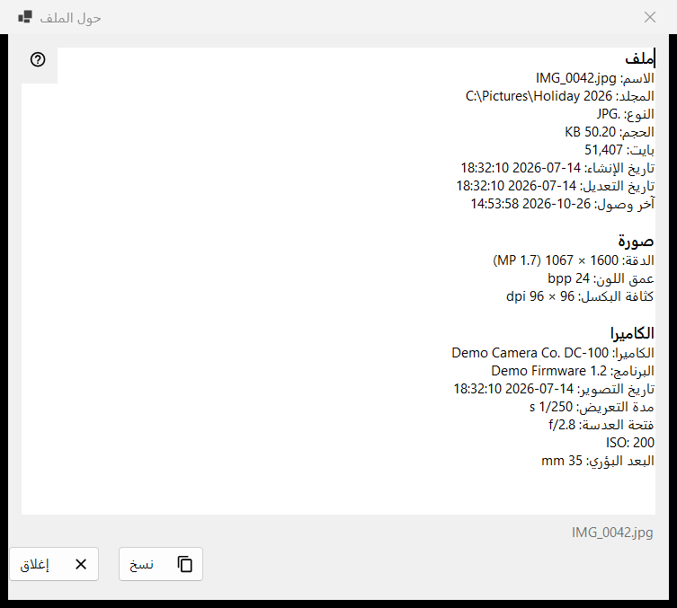
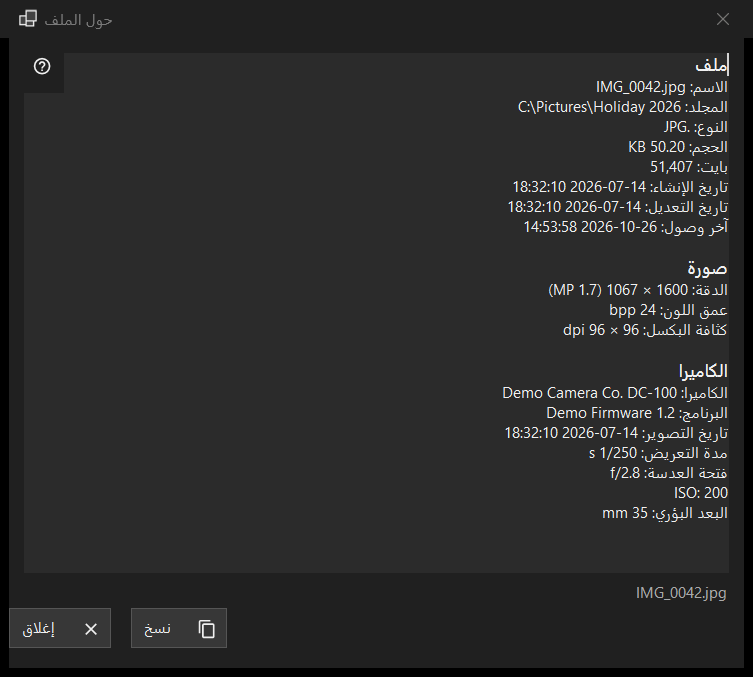

حول الملف
الغرض من هذه النافذة
لقطة للقراءة فقط لما يعرفه البرنامج عن الملف المعروض على الشاشة: الملف نفسه، والصورة مع بيانات الكاميرا، والمستند، ومسارات الصوت والفيديو. تُفتح من العنصر i في اللوحة الأولى، أو من حول الملف في كتلة الملف بقوائم العارض، وتصف الملف كما كان لحظة النقر.


بهذا الترتيب
- اعرض ملفًا في العارض.
- انقر على العنصر i في اللوحة الأولى، أو اختر حول الملف من القائمة.
- انتظر لحظة: يقول شريط الحالة جارٍ قراءة بيانات الملف.. وتمتلئ الصفوف.
- اقرأ الكتل، وحدّد ما تحتاجه، واضغط نسخ لوضع النص كاملًا في الحافظة.
- اضغط إغلاق أو Esc.
عناصر النافذة
الملف
لكل ملف هذه الكتلة: الاسم والمجلد والنوع والحجم وبايت وتاريخ الإنشاء وتاريخ التعديل وآخر وصول والخصائص. يُحذف الصف الذي لا يوجد ما يُعرض فيه. إذا لم يكن هناك ملف مفتوح يقول شريط الحالة لم يتم تحديد ملف؛ أما النسخة المؤقتة من أرشيف أو العنوان البعيد أو الملف الذي اختفى فيظهر معها الملف غير متاح ولا تُفتح أي نافذة.
الصورة
للصورة: الدقة كما تُعرض (فالصورة المخزنة على جانبها من الهاتف تظهر دقتها وهي معتدلة) وعمق اللون وكثافة البكسل، إن سجّلها الملف.
الكاميرا
تُقرأ من بيانات EXIF للصورة: الكاميرا والبرنامج وتاريخ التصوير ومدة التعريض وفتحة العدسة وISO والبعد البؤري والمؤلف. لا تظهر الإحداثيات إلا إذا كانت الصورة تحمل بيانات GPS، وينسخها زر نسخ أيضًا، فراجع النص قبل مشاركته.
المستند
لملف نصي: الأسطر والكلمات والأحرف والترميز، إضافة إلى تمت قراءة جزء من الملف فقط عندما يكون أكبر من أن يُقرأ كاملًا. للكتاب الإلكتروني: الاسم والمؤلف. لملف PDF: الصفحات.
الوسائط والفيديو والصوت
لملفات الصوت والفيديو تُضاف العلامات (الاسم والفنان والألبوم والسنة والمقطوعة والنوع والمخرج والمسلسل والموسم والحلقة والمدة) وأول مسار من كل نوع (الفيديو: الدقة وإطار في الثانية وبرنامج الترميز ومعدل البت؛ الصوت: برنامج الترميز والقنوات ومعدل العينة ومعدل البت) بعد لحظة من بقية البيانات، عندما ينتهي محرك الوسائط من القراءة. ولا تنتظر النافذة ذلك أبدًا. أما التدفقات الشبكية فلا تحصل على صفوف مسارات.
نسخ وإغلاق
يضع نسخ النص كاملًا في الحافظة، ويقول شريط الحالة تم النسخ إلى الحافظة؛ وإذا كان برنامج آخر يحتفظ بالحافظة فإنه يخبرك بذلك ويمكنك الضغط على نسخ مرة أخرى. ويعمل أيضًا نسخ التحديد بـ Ctrl+C. وإذا تعذّرت قراءة أي شيء يقول المربع تعذّرت قراءة معلومات الملف. وبجوار الأزرار يعرض شريط الحالة اسم الملف. والانتقال إلى ملف آخر لا يغيّر هذه النافذة: انقر على i مرة أخرى للملف الجديد.